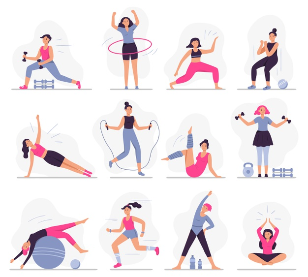

Salah satu cara dalam meningkatkan Imun Tubuh adalah dengan melakukan Olahraga. Olahraga terbukti mampu meningkatkan imun tubuh dan meredakan peradangan. Perlu diingat, olahraga yang dilakukan secara teratur memiliki efek yang lebih baik terhadap sistem imun dibandingkan olahraga yang hanya sesekali. Oleh karena itu setidaknya setiap hari kita menyempatkan waktu untuk berolahraga selama minimal 30 menit. Adanya pandemi memang membuat aktivitas menjadi terhambat. Banyak kegiatan yang sebaiknya ditunda apabila tidak mendesak. Walaupun pekerjaan harus tetap dilaksanakan sebaiknya diusahakan untuk dikerjakan di rumah ( Work From Home). Maka dari itu, berikut ini adalah beberapa contoh olahraga yang dapat dilakukan di rumah :
Jenis olahraga kardio adalah olahraga yang efektif membakar lemak dan membuat tubuh berkeringat. Olahraga ini dapat dilakukan di rumah sehingga mengurangi risiko terjangkit COVID-19. Jika kita memiliki treadmill, sepeda statis atau alat kardio lainnya di rumah, maka kita bisa memanfaatkannya. Namun, jangan khawatir, lompat tali atau skipping juga bisa menjadi alternatif. Melakukan Jogging di luar rumah juga dapat dilakukan akan tetapi sebaiknya dilakukan di tempat yang tidak ramai dan dilakukan di waktu pagi hari sehingga terhindar dari kerumunan.
Jika tidak memiliki alat latihan kardio, kita bisa melakukan senam aerobik yang memiliki manfaat yang serupa. Olahraga satu ini juga menjadi pilihan yang menarik untuk dilakukan selama di rumah. Kita bisa melakukan senam zumba misalnya, dengan mengikuti video tutorial atau bahkan bersama teman-teman di rumah masing-masing lewat video conference. Instruktur olahraga aerobik tetap memberikan gerakan-gerakan yang membuat tubuh berkeringat sehingga tubuh menjadi lebih bugar. Senam aerobik juga mampu meredakan gejala depresi dan gangguan cemas yang dihadapi selama pandemi ini.
Olahraga ini mungkin terkesan mudah dan sederhana. Namun, jika dilakukan dengan sungguh-sungguh, olahraga ini juga tergolong efektif membakar lemak dan membuat tubuh berkeringat. Bonusnya lagi, beberapa gerakan yoga dapat membuat kamu lebih tenang dan santai. Sehingga kecemasan yang sering muncul selama pandemi ini bisa berkurang. Beberapa manfaat yoga lainnya adalah menjaga metabolisme tubuh, meningkatkan pernapasan, memperkuat energi serta vitalitas. Kita bisa melakukannya di rumah dengan mengikuti video tutorial yang banyak tersedia di internet.
Aktivitas menyenangkan ini juga bisa dihitung olahraga, Kita bisa nyalakan lagu favorit, atau sambal melihat video artis kesukaan. Menari juga tergolong sebagai olahraga karena meningkatkan ketahanan dan kekuatan tubuh. Kita juga bisa berkeringat saat menari, karena menari membuat tubuh lebih aktif dan terus bergerak.
Olahraga ini juga bisa dilakukan di rumah dan untungnya kita juga tidak memerlukan alat bantu. Push-up adalah olahraga yang tepat jika kita ingin memperkuat tubuh bagian atas, seperti dada. Jika rutin dilakukan setiap hari, maka dapat meningkatkan kekuatan otot dada dan tubuh menjadi lebih fit.
Itulah beberapa tips dalam berolahraga untuk menjaga imunitas. semoga sehat selalu. terima kasih sudah membaca tulisan ini.